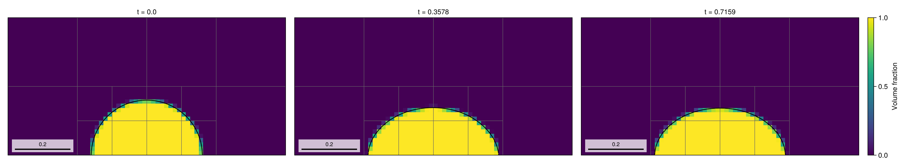
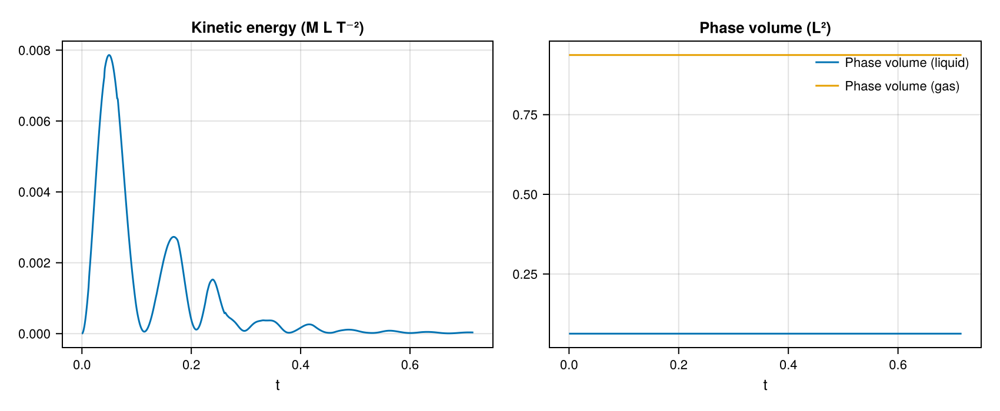
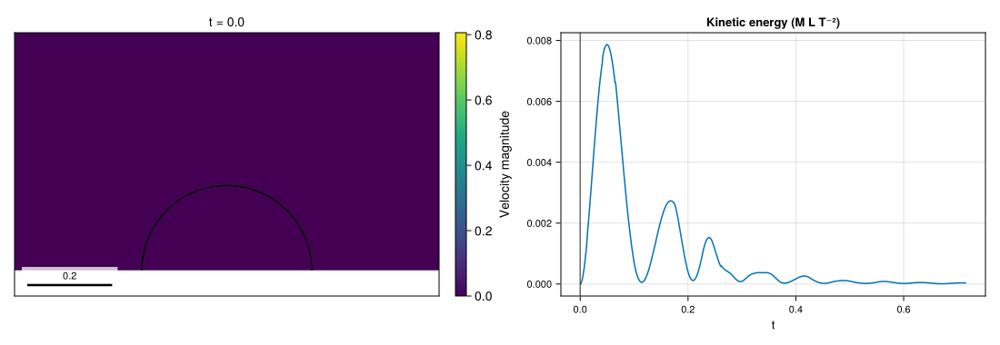

08 – Sessile droplet
A circular liquid cap relaxes under gravity and surface tension while maintaining a prescribed static contact angle at the lower wall.

At a glance
| Physics | Two phases in the nonperiodic unit square with no-slip walls; liquid/gas density ratio 1000, radius 0.2, surface tension 1, Bond number 1.21, Laplace number 550, and bottom-wall contact angle π/2. Gravity points downward, and μ_g=0.0175 μ_l. There is no embedded solid. |
| Algorithms | Default OneVelocityModel() with WY geometric VOF, LHF PLIC normals and WY fallback, CGFM surface tension, Lax–Wendroff momentum transport, implicit-midpoint diffusion and pressure projection with CG/tree-multigrid solvers. Interface and curvature AMR use minimum level 1 (clamped to max_level), 8 cells per radius, update interval 5 and coarsening delay 2. The prescribed wall angle enters the curvature approximation, not the PLIC advection plane. |
| Worth varying | bond=1.21 changes gravity; laplace=550 changes viscosity; density_ratio=1000 changes phase density and derived gravity; contact_angle=π/2 changes the initial circular cap and bottom-wall curvature condition; max_level=3 sets the AMR ceiling; final_time=nothing selects eight capillary times. The forwarded velocity_model defaults to OneVelocityModel(). |
| Validated against | :phase_volume should remain constant. At docs size the initial discrete liquid area is 0.0628318530718, matching the continuum semicircle area π(0.2)^2/2; the final change and maximum sampled absolute change are -3.49632e-10 and 3.49632e-10, respectively. |
| Cost | Default and docs: level 3 (square cells, dx = dy = 1/8 on level 0 and 1/64 at level 3, 12.8 cells per radius), T≈0.716, 1299 steps and 1024 final cells; setup and simulation took 32.11 s and the whole figure script 83.1 s on one thread, including first-use compilation and rendering. |
Gallery timings: Julia 1.12.7, one Julia thread and one BLAS thread, AMD Ryzen 9 5950X; package loading is excluded.
Setup
For radius R=0.2, the initial liquid lies inside the circle centred at (0.5,-R cos θ). With ρ=(1,0.001) and σ=1, the script derives
\[ g=\frac{\mathrm{Bo}\,\sigma}{(\rho_l-\rho_g)R^2},\qquad \mu_l=\sqrt{\frac{\sigma\rho_l R}{\mathrm{La}}},\qquad t_c=\sqrt{\frac{(\rho_l+\rho_g)R^3}{\sigma}}.\]
The default end time is 8t_c≈0.716. The contact angle is imposed only in the lower-wall curvature condition; it is not a measured angle in the plot. See the method reference for contact-angle curvature, surface tension and the viscous projection.
Run
From the repository root, in a Julia session started with --project=examples:
include("examples/08_sessile_droplet/sessile_droplet.jl")
run = run_example(max_level = 2)
@show diagnostic_history(run.flow, :kinetic_energy).values[end]
@show diagnostic_history(run.flow, :phase_volume).values[end]Run the example headlessly or regenerate the Cairo figures:
julia --project=examples examples/08_sessile_droplet/sessile_droplet.jl
julia --project=examples -e 'include("examples/08_sessile_droplet/make_figures.jl"); make_figures()'Append --studio to the example command to follow the run in a browser; press Ctrl+C to close Studio after the run.
Both sizes use the level-3 default.
Results
The hero shows volume fraction and reconstructed interface near 0, 4t_c and 8t_c; titles are actual nearest completed-step times, and gray outlines show AMR blocks.


The GIF samples 41 output frames on a uniform simulation-time grid, each showing the nearest retained keyframe: speed and interface in the lower half of the domain, next to the kinetic energy with a cursor at the shown time.
The final kinetic energy is 3.39393e-5 (peak 0.00786202), and liquid volume changes by -3.49632e-10 from its initial discrete value. These diagnose motion and conservation; no contact-angle error is claimed.
Variations
run_example(max_level = 2, contact_angle = pi / 3) # different wall angle
run_example(max_level = 2, bond = 0.3) # weaker gravity
run_example(max_level = 2, velocity_model = TwoVelocityModel())Files
- sessile_droplet.jl – circular-cap setup and flow diagnostics.
- make_figures.jl – retained interface snapshots and histories.